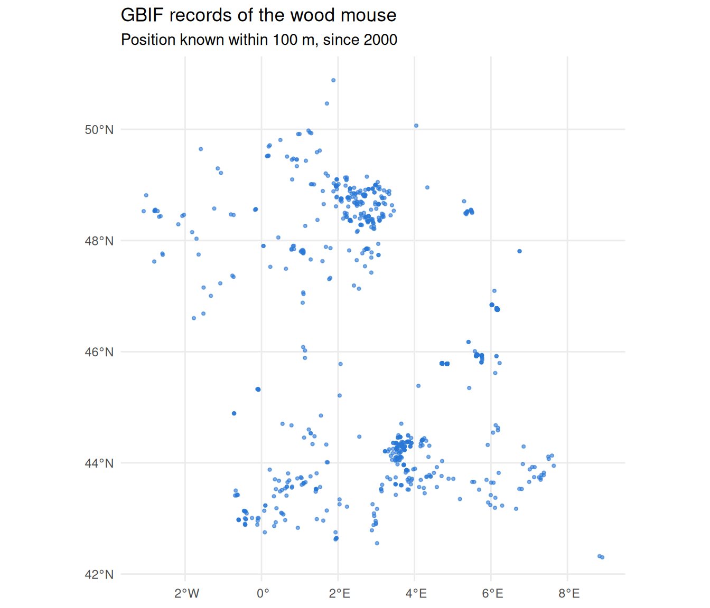
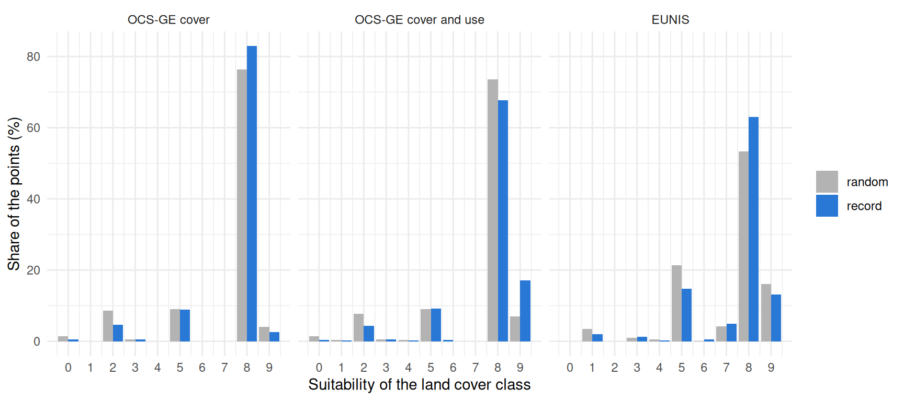
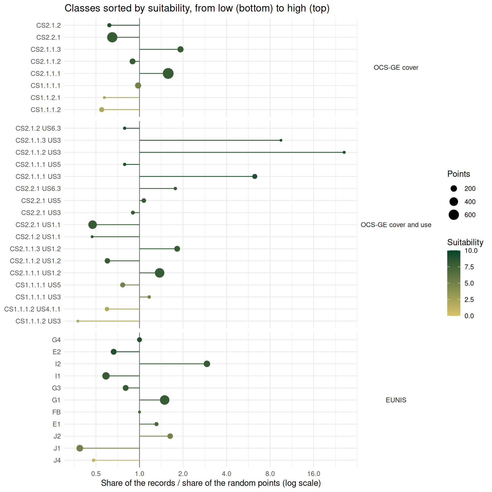

Introduction
The habitat scores of spacemodR come from expert knowledge: they say where a species should live. Occurrence records say where the species was seen. Comparing the two is a simple way to check a habitat layer.
GBIF (Global Biodiversity Information Facility) is the largest open database of occurrence records. It gathers museum specimens, field surveys and observations from citizen science platforms.
This guide has two parts:
- how to download records with
get_gbif_data(); - a worked example with the wood mouse (Apodemus sylvaticus) in France, where the records are compared with the habitat scores from EUNIS and OCS-GE (see Habitat Data Sources).
Downloading records
A first request
get_gbif_data() needs the name of a species. A region of interest is optional. No account and no key are needed.
roi <- st_as_sfc(st_bbox(c(xmin = 2.0, ymin = 49.95, xmax = 4.3, ymax = 51.1), crs = 4326))
occ <- get_gbif_data("Apodemus sylvaticus", roi = roi)The function does three things:
- it looks for the name in the GBIF taxonomy. Underscores are read as spaces, so the names of the species dictionaries (
"Apodemus_sylvaticus") work too; - it downloads the records found in the bounding box of
roi, by pages of 300; - it keeps the records that are inside
roi.
The result is an sf object of points in longitude and latitude (EPSG:4326), with one row for each record:
| Column | Meaning |
|---|---|
key |
GBIF identifier of the record |
species |
Scientific name |
coordinateUncertaintyInMeters |
Uncertainty of the position, often missing |
eventDate, year
|
Date and year of the observation |
basisOfRecord |
Type of record: observation, museum specimen, … |
datasetKey |
GBIF identifier of the dataset that holds the record |
license |
License of the record |
Only records with coordinates, and without a known problem on these coordinates, are returned.
How many records
By default the function stops after 1000 records. The argument limit changes this number. The total number of records that match the request is stored as an attribute of the result, so you can check if you got all of them:
Filters
Any filter of the GBIF occurrence search can be added as a named argument. A range is written "min,max".
occ <- get_gbif_data(
"Apodemus sylvaticus",
roi = roi,
year = "2000,2026", # observed since 2000
coordinateUncertaintyInMeters = "0,100", # position known within 100 m
basisOfRecord = "HUMAN_OBSERVATION" # no museum specimen
)Without roi, the search is made on the whole world. The filter country (two letter code) is then a simple way to work on one country:
occ <- get_gbif_data("Apodemus sylvaticus", country = "FR", limit = 5000)Limits to keep in mind
-
Large requests are slow. The search service of GBIF is made for small requests. It never gives more than 100,000 records, and it becomes very slow after about 10,000. For a large request, add filters, or split the request by year or by region. For a very large one, use the download service of GBIF with the function
occ_download()of thergbifpackage (it needs a free GBIF account). - Records are not a survey. They show where people saw the species. A place without record is not a place without the species. Records are more common near towns, roads and nature reserves, because observers are more common there.
- Positions can be imprecise. Many records have an uncertainty of several kilometers, or no uncertainty at all.
-
Cite the data. Each record belongs to a dataset with its own license (columns
datasetKeyandlicense). For a publication, follow the GBIF citation guidelines.
Example: the wood mouse in France
The wood mouse is one of the most common small mammals in Europe. It lives in woods, hedges, gardens and fields. In the species dictionaries it is a generalist: most land cover classes with vegetation have a high suitability. Do the GBIF records agree with these scores?
Choosing the scale
To compare a record with a land cover map, the position of the record must be at least as precise as the map. The EUNIS map has pixels of 100 m, and OCS-GE maps objects of a few meters. So we keep the records with a position known within 100 m. This filter removes most of the records:
| Records of Apodemus sylvaticus in GBIF (October 2026) | Number |
|---|---|
| France, with coordinates | 27,722 |
| Position known within 100 m | 1,926 |
| Observed since 2000 | 1,636 |
| One record for each location | 1,223 |
| Open license (CC0 or CC BY) | 1,037 |
One study site is too small for this comparison. Around the Metaleurop site used in the other guides, only one record has a position known within 100 m. The right scale here is the whole country. This is also a light request: with the filters, the records come in a few seconds.
Two more choices were made:
- records before 2000 are removed, because the land cover maps describe the landscape of the last years;
- when several records have the same position (a trap line, an observer who comes back), one is kept.
The last line of the table is not about ecology. Records with a non-commercial license (CC BY-NC) are left out so that the table can be shared with the package.
occ <- get_gbif_data("Apodemus sylvaticus", limit = 10000, country = "FR",
coordinateUncertaintyInMeters = "0,100",
year = "2000,2026")
# one record for each location (coordinates rounded to about 1 m)
occ <- occ[!duplicated(round(st_coordinates(occ), 5)), ]A random point for each record
Records alone are hard to read. If 40% of the records are in woodland, is it a lot? It depends on how much woodland there is where people look for mice.
So each record gets a partner: a random point drawn within 2 km around it. The random point tells what the landscape offers near the record. A distance of 2 km is more than a wood mouse travels in its daily life, but it stays in the same landscape, with the same observers.
radius <- 2000
xy <- st_coordinates(st_transform(occ, 2154)) # Lambert-93, in meters
r <- radius * sqrt(runif(nrow(xy)))
a <- runif(nrow(xy), 0, 2 * pi)
rnd <- st_as_sf(data.frame(x = xy[, 1] + r * cos(a), y = xy[, 2] + r * sin(a)),
coords = c("x", "y"), crs = 2154)Land cover under the points
We do not need the land cover of all France, only its class under about 2,400 points. This keeps the work small enough for a laptop (about 15 minutes), if it is divided in the right way.
EUNIS. The EEA service gives images of 4096 x 4096 pixels at most. At 100 m, France does not fit in one image, so it is cut in tiles of 400 km. Each tile is downloaded with get_eunis_data(), the class under the points is read, and the tile is dropped.
pts <- st_transform(rbind(st_sf(geometry = st_geometry(st_transform(occ, 2154))), rnd), 3035)
pts$code_eunis <- NA_character_
bb <- st_bbox(pts)
tile <- 400000
for (x0 in seq(floor(bb[["xmin"]] / tile) * tile, bb[["xmax"]], by = tile)) {
for (y0 in seq(floor(bb[["ymin"]] / tile) * tile, bb[["ymax"]], by = tile)) {
box <- st_as_sfc(st_bbox(c(xmin = x0, ymin = y0, xmax = x0 + tile, ymax = y0 + tile),
crs = 3035))
inside <- which(lengths(st_intersects(pts, box)) > 0)
if (length(inside) == 0) next
eunis <- get_eunis_data(box, level = "L2", resolution = 100)
pts$code_eunis[inside] <- as.character(terra::extract(eunis, terra::vect(pts[inside, ]))[, 2])
}
}OCS-GE. With a FlatGeobuf file, get_ocsge() downloads only the polygons that touch the region of interest. With a point as region of interest, it returns the polygon under the point. One request takes one or two seconds.
The script that built the table of this guide is raw_data/build_gbif_apsy_france.R in the source repository. It does the same steps, with the OCS-GE requests run in parallel and saved by chunks, so that it can be stopped and started again.
The table
The result is kept in the source repository (inst/extdata/gbif_apsy_france.csv) and is read here with a small helper, load_table_repo().
pts <- load_table_repo("gbif_apsy_france.csv")
pts <- st_as_sf(pts, coords = c("lon", "lat"), crs = 4326)
head(st_drop_geometry(pts)[, c("pair", "type", "code_eunis", "code_cs", "code_us", "year")])
#> pair type code_eunis code_cs code_us year
#> 1 3 record I2 CS2.1.1.3 US1.2 2026
#> 2 22 record G1 CS2.2.1 US6.3 2026
#> 3 40 record J1 CS2.2.1 US5 2025
#> 4 50 record C1 CS2.2.1 US3 2025
#> 5 52 record C1 CS2.2.1 US3 2025
#> 6 53 record C1 CS2.2.1 US3 2025pair links a record with its random point, and type tells which is which.
ggplot(pts[pts$type == "record", ]) +
geom_sf(colour = "#2a78d6", size = 0.8, alpha = 0.6) +
theme_minimal() +
labs(title = "GBIF records of the wood mouse",
subtitle = "Position known within 100 m, since 2000")
The records are not spread evenly. The Paris region and the south have many of them, and large parts of the country have almost none. This shows where the observers are, not where the mice are. It is the reason why each record is compared with a point of its own neighbourhood, and not with a point taken anywhere in France.
Habitat scores of the points
Each point now gets the suitability of the wood mouse for its land cover class. We do it for the three sources of the Habitat Data Sources guide. For OCS-GE, join_ocsge_species() does the join, with or without the land use. For EUNIS, the join is a simple match on the class code.
species <- "Apodemus_sylvaticus"
# OCS-GE, cover only, then cover and use
pts$cover <- join_ocsge_species(pts, species, us_col = NULL)$suitability
pts$cover_use <- join_ocsge_species(pts, species)$suitability
# EUNIS; for a combined code such as "D5/F6", the mean of the two classes
dict <- eunis_species_dict[eunis_species_dict$species_name == species, ]
pts$eunis <- vapply(strsplit(pts$code_eunis, "/"),
function(cc) mean(dict$suitability[match(cc, dict$code_eunis)]),
numeric(1))A few points have no land cover (they fall in the sea, or outside the maps). We keep the pairs where both points have the three scores.
Do the records match the scores?
Overall
If the scores are right, records should fall on better classes than random points. For each source, the table gives the mean suitability of the two groups, and the share of pairs where the record has a higher, an equal or a lower score than its random point.
sources <- c(cover = "OCS-GE cover", cover_use = "OCS-GE cover and use", eunis = "EUNIS")
pairs <- scores %>%
select(pair, type, all_of(names(sources))) %>%
pivot_longer(all_of(names(sources)), names_to = "source", values_to = "suitability") %>%
mutate(source = factor(sources[source], levels = sources))
pairs %>%
pivot_wider(names_from = type, values_from = suitability) %>%
group_by(source) %>%
summarise(mean_record = round(mean(record), 2),
mean_random = round(mean(random), 2),
higher = round(100 * mean(record > random)),
equal = round(100 * mean(record == random)),
lower = round(100 * mean(record < random)),
p_value = signif(wilcox.test(record, random, paired = TRUE)$p.value, 2)) %>%
knitr::kable()| source | mean_record | mean_random | higher | equal | lower | p_value |
|---|---|---|---|---|---|---|
| OCS-GE cover | 7.41 | 7.12 | 20 | 65 | 15 | 2.7e-04 |
| OCS-GE cover and use | 7.55 | 7.15 | 23 | 61 | 16 | 1.9e-06 |
| EUNIS | 7.41 | 7.17 | 30 | 45 | 25 | 5.8e-04 |
The match is clear, but small:
- the records are on good habitat: their mean suitability is about 7.5 on a scale from 0 to 10, with the three sources;
- the random points are almost as good, only 0.2 to 0.4 points below. For a generalist like the wood mouse, most of the French countryside has a high score, so a random point near a record is usually also on good habitat;
- in about half of the pairs, the record and its random point have the same score (they are often in the same class). In the other pairs, the record wins more often than it loses;
- the difference is not due to chance: the
p_valuecolumn (paired Wilcoxon test) is very small for the three sources; - the land use helps. OCS-GE with the use gives the largest difference between records and random points.
The distribution of the scores shows where the small difference comes from:
pairs %>%
mutate(score = round(suitability)) %>%
count(source, type, score) %>%
group_by(source, type) %>%
mutate(share = 100 * n / sum(n)) %>%
ggplot(aes(score, share, fill = type)) +
geom_col(position = position_dodge(preserve = "single")) +
facet_wrap(~source) +
scale_x_continuous(breaks = 0:10) +
scale_fill_manual(values = c(random = "grey70", record = "#2a78d6"), name = NULL) +
theme_minimal() +
labs(x = "Suitability of the land cover class", y = "Share of the points (%)")
Records are less common than random points on the classes with a low score (0 to 3), which is what the scores predict. But about nine points out of ten, in both groups, are on classes with a score of 5 or more.
Class by class
A mean hides the details. For each class, we compare the share of the records with the share of the random points. Their ratio is above 1 when the records are more common in the class than expected from the landscape around them, and below 1 when they are less common. Classes with less than 20 points are not shown, because their ratio is not reliable.
class_ratio <- function(class, score) {
data.frame(class = class, type = scores$type, suitability = score) %>%
group_by(class) %>%
summarise(suitability = mean(suitability),
record = sum(type == "record"), random = sum(type == "random")) %>%
mutate(ratio = (record / sum(record)) / (random / sum(random))) %>%
filter(record + random >= 20)
}
classes <- bind_rows(
"OCS-GE cover" = class_ratio(scores$code_cs, scores$cover),
"OCS-GE cover and use" = class_ratio(paste(scores$code_cs, scores$code_us), scores$cover_use),
"EUNIS" = class_ratio(scores$code_eunis, scores$eunis),
.id = "source"
) %>%
mutate(source = factor(source, levels = sources))
ggplot(classes, aes(ratio, reorder(class, suitability), colour = suitability)) +
geom_vline(xintercept = 1, colour = "grey50") +
geom_segment(aes(x = 1, xend = ratio, yend = reorder(class, suitability))) +
geom_point(aes(size = record + random)) +
facet_grid(source ~ ., scales = "free_y", space = "free_y") +
scale_x_log10(breaks = c(0.25, 0.5, 1, 2, 4, 8, 16)) +
scale_colour_gradient(low = "#d9c36a", high = "#004529", limits = c(0, 10), name = "Suitability") +
scale_size_area(max_size = 6, name = "Points") +
theme_minimal() +
theme(strip.text.y = element_text(angle = 0)) +
labs(x = "Share of the records / share of the random points (log scale)", y = NULL,
title = "Classes sorted by suitability, from low (bottom) to high (top)")
The table below gives the classes that hold most of the points, for OCS-GE with the use and for EUNIS.
data("ref_ocsge")
data("ref_eunis")
labels <- c(setNames(ref_ocsge$nomenclature, ref_ocsge$code_cs),
setNames(ref_eunis$nomenclature, ref_eunis$code))
classes %>%
filter(source != "OCS-GE cover", record + random >= 60) %>%
mutate(label = substr(labels[sub(" .*", "", class)], 1, 40), ratio = round(ratio, 2)) %>%
arrange(source, desc(ratio)) %>%
select(source, class, label, suitability, record, random, ratio) %>%
knitr::kable()| source | class | label | suitability | record | random | ratio |
|---|---|---|---|---|---|---|
| OCS-GE cover and use | CS2.1.1.1 US3 | Feuillus | 9 | 94 | 15 | 6.27 |
| OCS-GE cover and use | CS2.1.1.3 US1.2 | Mixte | 8 | 102 | 56 | 1.82 |
| OCS-GE cover and use | CS2.1.1.1 US1.2 | Feuillus | 8 | 292 | 212 | 1.38 |
| OCS-GE cover and use | CS2.2.1 US5 | Formations herbacées | 8 | 45 | 42 | 1.07 |
| OCS-GE cover and use | CS1.1.1.1 US5 | Zones bâties | 5 | 49 | 64 | 0.77 |
| OCS-GE cover and use | CS1.1.1.2 US4.1.1 | Zones non bâties | 2 | 28 | 47 | 0.60 |
| OCS-GE cover and use | CS2.1.1.2 US1.2 | Conifères | 8 | 51 | 85 | 0.60 |
| OCS-GE cover and use | CS2.2.1 US1.1 | Formations herbacées | 8 | 127 | 268 | 0.47 |
| EUNIS | I2 | Cultivated areas of gardens and parks | 8 | 155 | 53 | 2.92 |
| EUNIS | J2 | Low density buildings | 5 | 88 | 54 | 1.63 |
| EUNIS | G1 | Broadleaved deciduous woodland | 8 | 300 | 201 | 1.49 |
| EUNIS | E1 | Dry grasslands | 7 | 38 | 29 | 1.31 |
| EUNIS | G4 | Mixed deciduous and coniferous woodland | 9 | 53 | 53 | 1.00 |
| EUNIS | G3 | Coniferous woodland | 8 | 73 | 91 | 0.80 |
| EUNIS | E2 | Mesic grasslands | 9 | 65 | 98 | 0.66 |
| EUNIS | I1 | Arable land and market gardens | 8 | 105 | 179 | 0.59 |
| EUNIS | J1 | Buildings of cities, towns and villages | 5 | 63 | 163 | 0.39 |
What agrees with the scores:
-
broadleaved woodland (
CS2.1.1.1, EUNISG1) has a high score and holds more records than expected. It is the first habitat of the records; -
sealed ground without buildings (
CS1.1.1.2: roads, car parks) and dense built-up areas (EUNISJ1) have low or medium scores and hold about half of the records expected, or less.
What does not agree:
-
farmland is the main disagreement. Herbaceous cover used for agriculture (
CS2.2.1 US1.1) and arable land (EUNISI1) have a score of 8, but they hold about half of the records expected. Either the score is too high for open fields, or mice are there and nobody looks for them in the middle of a field. Both are probably true: the wood mouse uses fields, but mostly near hedges and wood edges; -
coniferous woodland (
CS2.1.1.2, EUNISG3) has the same score as broadleaved woodland, but fewer records than expected; -
parks and gardens (EUNIS
I2, and woodland with a service or leisure use,US3) hold three to six times more records than expected. Many people walk and take pictures in these places, so this is likely an effect of the observers more than a preference of the mouse.
What to take from this example
- GBIF records support the general shape of the scores of the wood mouse: records are on classes scored as good habitat, and woodland comes first.
- They also point to scores that deserve a second look: farmed land and coniferous woodland, both scored 8, hold fewer records than expected.
- They cannot give new scores by themselves. The observer effect (parks, gardens, places easy to reach) is as large as the differences between classes.
- For a generalist species, this test has little power: almost every place is good habitat. It would say more for a specialist, for which good and bad classes are both common around the records.
- The comparison is only possible with precise records, and they are few. For the wood mouse, 7% of the French records have a position known within 100 m. For many species, a single study site will not have enough records, and the comparison has to be made at the scale of a region or a country, as here.
Records can also be used the other way: as observed sources in a connectivity model, or to check its output (see Landscape Connectivity (Omniscape)).